A CLAUDE CODE PLUGIN
Reviews the pull request. Fixes what it finds. Proves it before merging.
Categorized findings with testable contracts, fixes committed one per finding, verification that executes instead of judging prose, and a merge gate that asks you first. Deterministic scripts do the mechanics; models spend tokens only on judgment.

One finding, start to finish. The full loop is below.
Install
requires git and an authenticated GitHub CLI; the plugin holds no token of its own$ claude plugin marketplace add Paxton-Meny/pr-review-workflow $ claude plugin install pr-review-workflow then, from a clone of the repository under review › /pr-review-workflow:review-pr 128
The shape of a run
Scripts run down the center: deterministic shell at zero model cost. Purple cards are isolated model contexts, reached only for judgment. Teal is GitHub. Also accepted as an argument: owner/repo#128 or the pull request URL; the run refuses immediately, before touching anything, if the clone's origin is not the reviewed repository.
![The shape of a run in three lanes: scripts run down the center as the backbone, GitHub on the left, models on the right. One command stages the pull request with no model; the reviewer reads once, in up to four parallel shards, then a gap pass; findings are banked, filtered, proven, and posted as inline threads; a loop of at most four rounds runs the editor, the check gate, the verifier over executed contracts, and a skim; a merge gate asks first, and a run that does not converge parks with a status comment.](assets/pipeline.svg)

Every finding is a contract
The Resolution line is a testable acceptance criterion: the editor edits until it holds and the verifier judges it verbatim. Where one command can prove it, a Check line makes verification an execution instead of an opinion, contained to the project's own check command and prefixes you approve.
The Fix line banks the reviewer's reading, paths, exact spans, helpers, and test locations, so nobody pays to rediscover the project. A suggestion fence is a proof, not a guess: it posts only after being applied in a scratch worktree and passing the check command.
What keeps reviews honest
Convergence is engineered, not hoped for.
Layered authority
The project's own stated rules bind first and sharpen whichever category each rule's subject belongs to; observable conventions apply where rules are silent; general practice where both are. Projects without written standards lose nothing.
Refutation, then a cold re-read
Every candidate finding survives an attempt to kill it: is the path reachable, is the case handled elsewhere, did this change introduce it? Then a precision filter re-reads the cited code fresh and demotes what the evidence cannot support, recorded, never dropped.
A gap pass over the seams
A sharded review always ends with a whole-diff pass: shards read disjoint file sets, so only that pass sees defects spanning them, and it inspects the recorded seams first.
Separation of powers
The agent that writes code cannot close findings, and the agent that closes findings cannot write code. A skim after every round catches changes no finding asked for.
Untrusted end to end
Diffs, descriptions, and comments are data, never instructions; an attempt to steer the reviewer is itself a security finding. Credentials stay inside the GitHub CLI.
Criteria that grow from evidence
Defects that fit no listed item still get filed, with a note naming the gap, and every finished run banks one statistics line, so thresholds and checklists are tuned from what runs actually show.
Settings
Configured when you enable the plugin; the dialog opens with /plugin configure pr-review-workflow. The settings reference explains each one in plain terms, shows what every value changes on a pull request, and says when to choose it.
| Option | Default | Meaning |
|---|---|---|
| Auto-approve | off | Merge without asking once the loop is clean. When off, you get a prompt: merge now or hold. |
| Check command | empty | The reviewed repository's own check. It proves suggestions, gates every editing round, and anchors executable contracts. |
| Local standards files | empty | Globs for untracked rule files in your clone. Their substance guides review; their names never reach the pull request. |
| Second review pass | risky | When the gap pass runs on single-reviewer runs: off, risky, or always. Sharded reviews always get one. |
| Ledgers kept | 20 | Finished finding ledgers retained per repository after each merge; older ones are pruned. |
| Reviewer, editor, verifier model | inherit, inherit, sonnet | Model per role; verification is cheap by design. |
| Model routing | auto | Cheaper models where the work is provably mechanical; one strong arbitration pass before any park. The gap pass never routes down. |
| Strong model | empty | auto routing climbs to it for large or sensitive code changes and arbitration; empty caps routing at the reviewer model. |
| Contract command prefixes | empty | Extra prefixes a finding's Check line may start with; verification runs allowed Check lines instead of judging prose. |
| Precision filter | on | A cheap pass re-reads each finding's code before posting; unsupported findings demote to the summary, never dropped. |
| Review samples | 1 | Independent first-review passes per shard; duplicates merge with a support count. Recall for cost, opt-in. |
Licensing
Personal projects, research, education, and nonprofit and government work, under the PolyForm Noncommercial License 1.0.0, with the attribution notice the license carries.
Use by or for a commercial organization: running it on a company's pull requests, selling it, bundling it into a product, or offering it within a paid service. Terms are arranged directly and sized to the use.
Open a commercial license inquiry →For anything better raised privately, reach the maintainer through their GitHub profile.